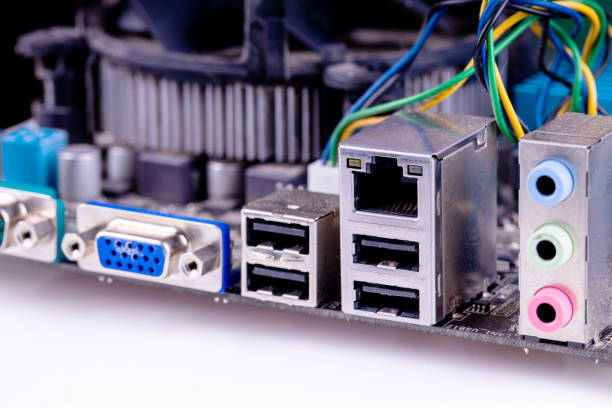
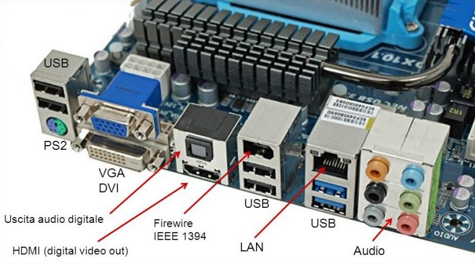
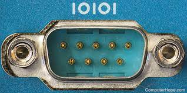
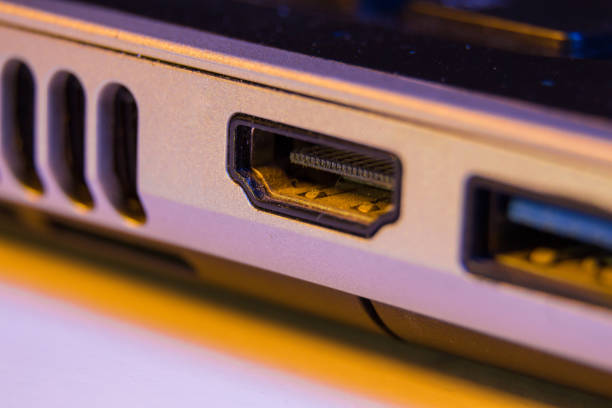
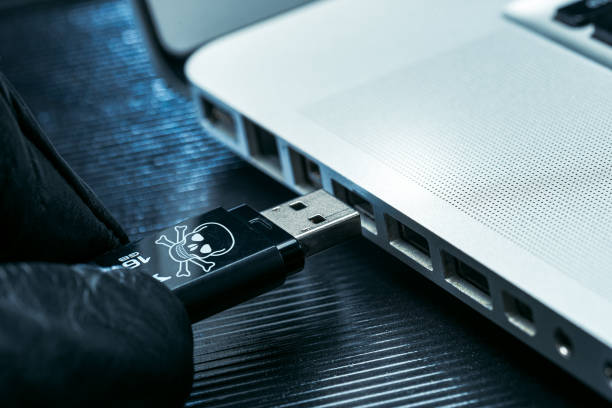
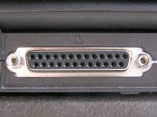
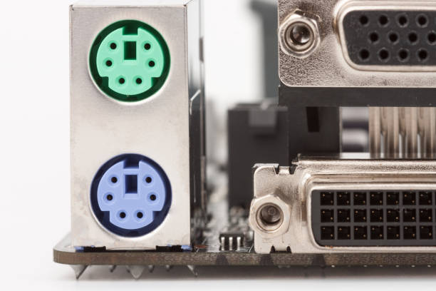
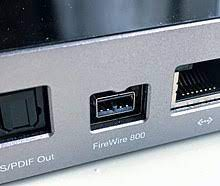

Web Page Design & Computer Peripherals
Input & Output Ports

The input and output units, that is the devices that allow the introduction of data and the display of the results (keyboard, mouse, monitor, printers, etc.), are external to the Motherboard, and are connected through appropriate connectors, called ports of connection or input and output (I/O).
In general, each port has the characteristics suitable for the device to be connected. In reality the manufacturers try to standardize the devices so as not to need a myriad of different doors.
Types Of Input And Output Ports

- Serial Port
- HDMI Port
- USB Port
- Parallel Port
- PS/2 Port
- Ethernet Port
- Fire Wire

SERIAL PORT:
In computing, a serial port is a serial communication interface through which information transfers
in or out sequentially one bit at a time. This is in contrast to a parallel port, which communicates multiple bits simultaneously in parallel.
Throughout most of the history of personal computers, data has been transferred through serial ports to devices such as modems, terminals,
various peripherals, and directly between computers.
Modern consumer personal computers (PCs) have largely replaced serial ports with higher-speed standards, primarily USB. However, serial ports are still frequently used in applications demanding simple, low-speed interfaces, such as industrial automation systems, scientific instruments, point of sale systems and some industrial and consumer products.

HDMI PORT:
High-Definition Multimedia Interface (HDMI) is a proprietary audio/video interface for transmitting uncompressed video data
and compressed or uncompressed digital audio data from an HDMI-compliant source device, such as a display controller, to a compatible computer
monitor, video projector, digital television, or digital audio device.HDMI is a digital replacement for analog video standards.
Several versions of HDMI have been developed and deployed since the initial release of the technology, but all use the same cable and connector. Other than improved audio and video capacity, performance, resolution and color spaces, newer versions have optional advanced features such as 3D, Ethernet data connection, and CEC extensions.

USB PORT:
A USB port is a standard cable connection interface for personal computers and consumer electronics devices.
USB stands for Universal Serial Bus, an industry standard for short-distance digital data communications. USB ports allow USB devices to be
connected to each other with and transfer digital data over USB cables. They can also supply electric power across the cable to devices that
need it.
The USB cable provides four pathways- two power conductors and two twisted signal conductors. The USB device that uses full speed bandwidth devices must have a twisted pair D+ and D- conductors. The data is transferred through the D+ and D- connectors while Vbus and Gnd connectors provide power to the USB device.
Both wired and wireless versions of the USB standard exist, although only the wired version involves USB ports and cables.

PARALLEL PORT:
A parallel port is an interface allowing a personal computer (PC) to transmit or receive data down multiple bundled
cables to a peripheral device such as a printer. The most common parallel port is a printer port known as the Centronics port.
A parallel port has multiple connectors and in theory allows data to be sent simultaneously down several cables at once.
Later versions allow bi-directional communications. This technology is still used today for low-data-rate communications such as dot-matrix
printing.
A parallel port is a type of interface on a personal computer (PC) transmitting or receiving data to a peripheral device such as a printer. The data is transmitted over a parallel cable extending no more than the standard 6 feet. If the cable is too long, the integrity of the data can be lost. The recommendation from Hewlett-Packard is a maximum of 10 feet.

PS2 PORT:
The PS/2 port is a 6-pin mini-DIN connector used for connecting keyboards and mice to a PC compatible computer system.
Its name comes from the IBM Personal System/2 series of personal computers, with which it was introduced in 1987. The PS/2 mouse connector
generally replaced the older DE-9 RS-232 "serial mouse" connector, while the PS/2 keyboard connector replaced the larger 5-pin/180° DIN
connector used in the IBM PC/AT design.
The PS/2 keyboard port is electrically and logically identical to the IBM AT keyboard port, differing only in the type of electrical connector used. The PS/2 platform introduced a second port with the same design as the keyboard port for use to connect a mouse; thus the PS/2-style keyboard and mouse interfaces are electrically similar and employ the same communication protocol.

Ethernet PORT:
An Ethernet port (also called a jack or socket) is an opening on computer network equipment that Ethernet cables plug into.
Their purpose is to connect wired network hardware in an Ethernet LAN, metropolitan area network (MAN), or wide area network (WAN).
Ethernet connections are found on the back of a computer or the back or side of a laptop. A router may have several Ethernet ports to accommodate multiple wired devices on a network. The same is true for other network hardware like hubs and modems. An Ethernet port accepts a cable that has an RJ-45 connector. The alternative to using such a cable with an Ethernet port is Wi-Fi, which eliminates the need for both the cable and the port.

FIREWIRE PORT:
IEEE 1394, commonly known as FireWire, is a standard connection type for many electronic devices such as
digital video cameras, printers and scanners, external hard drives, and other peripherals.
The terms IEEE 1394 and FireWire usually refer to the types of cables, ports, and connectors used to connect these types of external
devices to computers.
USB is a similar standard connection type for devices like flash drives and printers, cameras, and many other electronic devices.
The latest USB standard transmits data faster than IEEE 1394 and is more widely available.
Fire Wire was used to connect personal computers, audio and video devices, and other professional and consumer electronics.